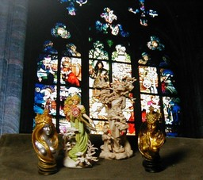

海洋堂 アルフォンス・ミュシャ フィギュアミュージアム 2集

海洋堂のミュシャ フィギュアミュージアム 2集から「春」「冬(象牙調)」「La Nature」(2種)です。「La Nature」は金のほうが彩色版になるようです。私は「La Nature」の金色のが欲しくて買ったのですが、今では私にとってハズレだった「春」のほうがイイなぁと思っています。背景はググって見つけました http://www.experienceprague.com/ のページのものです。 更新：06/02/11 初公開：2006年02月11日 16:20:32
Links:
海洋堂: http://www.kaiyodo.co.jp/products/mucha.html (hbm)
ミュシャ フィギュアミュージアム 2集: http://www.takaratoys.co.jp/takara_candy_toy/mucha/
背景: http://www.experienceprague.com/pics_pages/hrad/mucha%20window.jpg